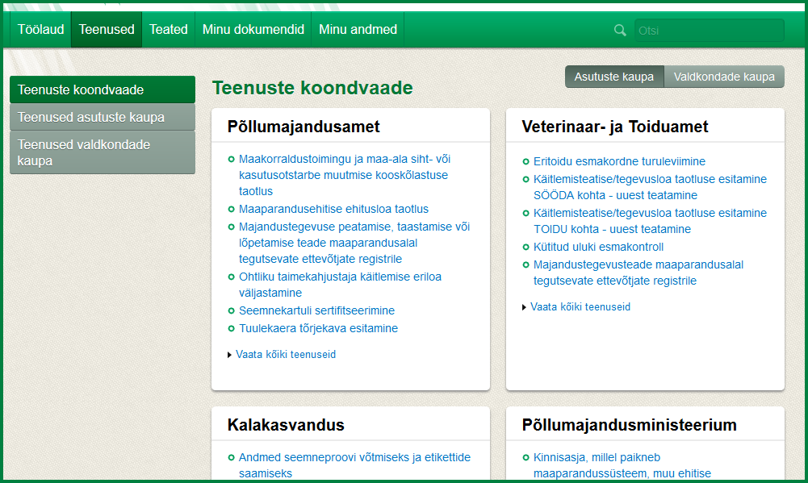

Põllumajandusministeeriumi kliendiportaali sisenemiseks on 2 meetodit: ID-kaart ja Mobiil-ID.
Kuvatakse kõik kliendid, kelle esindajana Teil on võimalik kliendiportaali siseneda. Pärast esindatava valikut kuvatakse portaali paremal ülalosas Teie nimi ja esindatava nimi. Esindatava nime peal vajutades on võimalik esindatavat vahetada. Esindatava valiku järel oleval hallil "X" nupul vajutades logitakse Teid portaalist välja.
Isiku esindajaks saab portaalis järgmiselt:
klikkige esindatava valiku kuval linki "Lisa uus isik". Seepeale kuvatakse esindatava valikusse Äriregistrist kõik juriidilised isikud, kelle ainuesindusõigusega esindaja Te Äriregistris olete, muuhulgas ka Teie registreeritud FIEd.
Juhul kui soovite esindada mõne teise eraisiku registreeritud FIEt, siis peab vastav isik sisenema FIEna Kliendiportaali ning volitama Teid enda esindajaks (vt Volitused).
Toimige samamoodi nagu on kirjeldatud punktis A. Juhul kui olete Äriregistris selle ettevõtte B-kaardil koos märkega, et Teil on ainuesindusõigus, siis kuvatakse ettevõte esindatavate valikusse.
Juhul kui "Lisa uus isik" ei kuvanud soovitud ettevõtet, siis järelikult Teil pole Äriregistri andmetel piisavalt õigusi. Sel juhul peab vastava toimingu (sisenema Kliendiportaali ja klikkima lingil "Lisa uus isik") ettevõtte esindaja, kellel on Äriregistris ettevõtte ainuesindusõigus. Seejärel saab ta Teile teha Kliendiportaalis volituse (vt Volitused).
Juhul kui soovitud ettevõttel ei ole Äriregistris ühtegi ainuesindusõigusega esindajat, siis toimige samamoodi nagu kirjeldatud punktis C.
Saatke sooviavaldusega e-kiri aadressile, mille leiate portaali jalusest.
Vastav isik peab Teid volitama portaalis enda esindajaks (vt Volitused).
Menüüpunkti "Töölaud" alt leiate uued saabunud teated ja viimased dokumendid, millega Te tegelesite.

Menüüpunkti "Teenused" alt leiate kõik e-teenused, mida Teil on õigus kasutada. Valige, kas soovite teenuseid näha asutuste või valdkondade kaupa.
Ka võite teenuseid otsida märksõna abil, sisestades vastava märksõna rohelise menüü paremal ülalosas asuvasse kiirotsingusse.
Teenuse peal klikkides avaneb vastava teenuse esitamise vorm. Kui Teil on mingi teenuse täitmine pooleli jäänud, avatakse aken, kus pakutakse võimalust poolelioleva dokumendi jätkamiseks.
Teenuseid on kahte liiki: lihtdokumendid ja vormdokumendid.
Teenuseid on võimalik ära salvestada ilma esitamata, et hiljem täitmist oleks võimalik jätkata. Pooleliolevad ja esitatud teenused on hiljem kättesaadavad menüüpunkti "Minu dokumendid" all.
Teatud teenuste puhul on võimalik maksta riigilõivu pangalinkide kaudu. Selleks tuleb dokument kõigepealt esitada ja seejärel pakutakse Teile võimalust pangalinkidega riigilõivude tasumiseks.
Menüüst "Minu dokumendid" -> "Pooleliolevad dokumendid" leiate enda või esindatava ettevõtja dokumendid, mille täitmine on jäänud pooleli, st dokumenti pole esitatud. Poolelioleva dokumendi peal klikkides viiakse teid dokumendi täitmise juurde tagasi, kus saate vajadusel dokumendi kustutada või esitada.
Menüüst "Minu dokumendid" -> "Esitatud dokumendid" leiate Kliendiportaalis enda poolt või esindatava ettevõtja eest esitatud dokumendid.
Dokumendi peal klikkides kuvatakse esitatud dokumendi andmed. Lisaks on pealkirja all järgnevad lingid erinevateks toiminguteks. NB! Olenevalt dokumendist võivad teatud lingid olla peidetud.
Saabunud dokumentide all kuvatakse dokumendid, mis on tulnud Põllumajandusministeeriumilt või selle allasutuselt, nt otsused.
Menüüpunktis "Minu andmed" kuvatakse esindatava isiku kontaktandmed ja volitused. Juhul, kui Te pole esindatavat valinud, kuvatakse Teie enda andmed.
Menüüpunktis "Minu andmed" on Teil võimalik
1) kontrollida, milliseid kontaktandmeid Põllumajandusministeerium Teie või esindatava isiku kohta teab. Andmed pärinevad Rahvastikuregistrist, Äriregistrist ning dokumentidelt (taotlused, avaldused), mida olete Põllumajandusministeeriumile esitanud. Vajadusel saate andmeid lisada ja parandada. Vastavaid andmeid kasutatakse vormide eeltäitmisel, kui kasutate Kliendiportaali teenuseid.
2) volitada teisi isikuid ennast/oma ettevõtet esindama
Põhiandmetes saate lisada ja muuta enda või esindatava isiku aadressi, telefoni ja e-maili. Soovi korral saate anda erinevate Põllumajandusministeeriumi valdkondadega suhtlemiseks erinevad kontaktandmed (s.t. aadressi, telefoni ja e-maili sisestamisel saate valida valdkonnad). Valdkonna võite jätte valimata, siis kehtib aadress/telefon/e-mail kõikides valdkondades.
Isikuandmeid muuta ei saa, need päritakse Rahvastikuregistrist või Äriregistrist. Juhul kui isik pole neis registrites registreeritud, siis saatke isikuandmete muutmiseks sooviavaldus e-maili aadressile, mille leiate portaali jalusest.
Kui tegemist on juriidilise isikuga (ettevõttega), siis on võimalik lisada ettevõtte tegevuskohad ja nende kontaktandmed.
Tegevuskoha kustutamiseks on tegevuskoha andmete kuva allosas nupp „Kustuta“.
Volituste all on võimalik määrata teisi isikuid enda esindajateks. Volitamine tähendab, et volitatu saab portaalis kliendi täieõiguslikuks esindajaks, s.t. näeb kõiki andmeid ja saab teha kõiki toiminguid, mida klient ise.
Volitusele saate määrata kehtivuse vahemiku. Lõppkuupäeva võib jätta määramata, siis kehtib volitus tähtajatult. Volituse lõpetamiseks peate portaalis avama sama volituse uuesti ning määrama lõppkuupäeva. Volituse kehtivuse vahemikku saab alati muuta.
Volitusele tuleb sisestada ka volitatava isiku e-maili aadress, sinna saadetakse volitatule teade selle kohta, et teda on Põllumajandusministeeriumi Kliendiportaalis volitatud teie/teie ettevõtte esindajaks.
Volituse kinnitamiseks tuleb volitus digiallkirjastada ID-kaardiga või mobiil-ID’ga.
Volitada saab ainult eraisikuid.
Kui klient on eraisik, siis saab volitusi jagada ainult tema ise. Volitatud esindajad volitusi edasi jagada ei saa.
Kui klient on juriidiline isik, siis saavad volitusi jagada esindajad, kellel on Äriregistris vastava juriidilise isiku ainuesindusõigus. Juhul kui juriidiline isik pole Äriregistris registreeritud (nt riigiasutused), siis portaali administraator lisab kliendile analoogse esindaja, kellel on õigus volitusi edasi jagada. Volitamisõigusega esindajad üksteise volitusi muuta ei saa, neid reguleerib ainult Äriregister (või kui klient pole Äriregistris, siis portaali administraator). Kui juriidilise isiku esindaja volitab portaalis kedagi (nt firma juht volitab mõnd töötajat portaalis firma nimel tegutsema), siis niimoodi volitatused saanud isik ise kedagi omakorda edasi volitada ei saa.
Äriregistris olev juriidilise isiku ainuesindusõigusega esindaja salvestatakse automaatselt portaalis vastava juriidilise isiku volituste nimekirja siis, kui ta selle juriidilise isiku nimel kliendiportaali siseneb. S.t. juriidilise isiku Äriregistri esindajate eelnev käsitsi sisestamine kliendiportaalis ei ole võimalik ega ka vajalik.